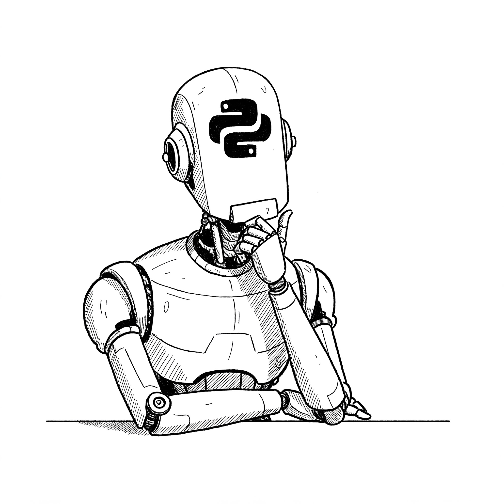

البايثونية
مقدمة

بسم الله الرحمن الرحيم. والحمد لله والصلاة والسلام على رسول الله وآله وصحبه ومن والاه. أما بعد.
لماذا نبرمج؟
ظل الذكاء الاصطناعي طموحًا عاليًا منذ بزوغ فجر علوم الحاسب (1953). وما زال هذا الهدف دافعًا قويًّا لكل من فهم أننا باختراع الحاسب (1833 - 1871) استطعنا محاكاة المنطق في آلات صماء. ولا حد لإمكانيَّة هذا المعالِج الآلي إلا تعبيرك اللغوي أيها الناطق البشري. فهذا جانب المعالجة.
وجانب الإدراك فيه:
أدوات الإحساس التي تُدخِلُ المرئيات والمسموعات ونحوها ؛ وقد تم محاكاتها بآلة التصوير (كاميرا) ولاقط الصوت (مايكروفون). وكذلك أجهزة استشعار دقيقة مثل مستشعر الحرارة أو الرطوبة أو أجهزة قياس المسافة أو ماسحات البصمة أو الرنين المغناطيسي (MRI) أو الموجات الكهرومغناطيسية في الأقمار الصناعية وأجهزة الملاحة الجوية والبحرية والبوصلة أو ميزان التسوية الأفقية (Gyroscope) وغيرها كثير.
ومنها ما يُسجل يدويًّا كما يكون في المستشفى: العمر والوزن والطول، أو بيانات الحضور والانصراف أو المبيعات اليومية، أو بيانات طلاب أو متدربين في دورة تدريبية أو سجلات المخزون ونحو ذلك. وهي كثيرة جدًّا.
ثم أدوات الاستيعاب وهي التي تجمع المحسوسات في وعاءٍ واحدٍ للاعتبار جُملةً واحدة، وقد تم محاكاتهُا بما نسميه الذاكرة (وهي على مراحل تَبعُد وتَقترب من مركز المعالجة). وتشبه الذاكرة في الجهاز ما يراه الشخص في الوقت الواحد أو يمكن تصوُّرُه في الذهن وتخيله في لحظة واحدة. أما الذكريات المخزنة لدينا ، وما نكتبه في مذكرات فيكون مسجلاً في أجهزة التخزين.
ثم تأتي أدوات المعالجة وهي الآلات القابلة للبرمجة؛ مثل وحدة المعالجة المركزية (CPU) ووحدة المعالجة الرسومية (GPU) وغيرها؛ حيث يوضَع المنطق المترجَم من لغات البرمجة ويشغِّل هذه الإلكترونيات المجهرية لتحقيق مقصوده منها.
لمن هذا الكتاب؟
بدأت بوادر تأليف هذا الكتاب أثناء تدريسي البرمجة بلغة بايثون لخريجي التخصصات التقنية تمهيدًا لهم للدخول في علوم البيانات والذكاء الاصطناعي. فأردت أن أضع مادة جامعة شاملة لأهم مفاهيم البرمجة في مستوى تطبيقي لا ينزل إلى التفاصيل الدقيقة التي لا يحتاج إليها الطالب. وقد راعيت فيه أصحاب التخصصات غير التقنية إذْ لم أغرِق في التفاصيل الرياضية ولا الحاسوبية الدقيقة، ولم أسهب فيها.
- فمن أراد أن يبدأ في البرمجة فليبدأ بهذا الكتاب؛ فالمواضيع منظمة بشكل منطقي وعملي مع مسائل نافعة للمبرمج تقترب في كل مرة من الواقع أكثر فأكثر.
- ومن أراد مرجِعًا لمواضيع البرمجة بلغة بايثون فهذا الكتاب صديقه؛ فالكتاب مقسَّم بحسب الموضوعات وكل موضوعٍ مقسَّم كذلك لتسهيل الوصول إلى أي مفهوم. كما تستطيع استعمال خاصيَّة البحث.
- وهو كذلك معينٌ لمن أراد تدريس البرمجة منطلقًا من لغة بايثون؛ فقد جمعتُ فيه ما تفرَّق ونظمتُه بعد نظرٍ في عدة مؤلفات مماثلة، وعلى ما رأيتُ أنه أنفع للمتعلم، وأضفتُ بعض الأقسام المتممة لما رأيت أنه ناقص بدونها.
أهداف الكتاب
- استيعاب ماهية البرمجة، ومعرفة إمكانياتها وحدودها
- إكساب مهارة التعبير الخوارزمي ثم كتابة ذلك بلغة بايثون وتشغيلها والاستفادة من نتائجها
- إكساب مهارة تركيب البرمجيات المعقَّدة عن طريق البحث وتجربة العديد من المكتبات البرمجيَّة المتكاملة مع بايثون
وأرجو الله أنك بتحقيق الهدف الثالث تفتح لك أبواب البرمجة، حيث تبحث وتقلب في مكتبة البرمجيات وتستعمل منها ما تحقق به مقصودك.
مشاكل نحاول تفاديها في هذا الكتاب
ما حاولت تفاديه في الكتاب الذي بين يديك مما قد تجده في مواد أخرى تشرح البرمجة أو بايثون:
❌ العشوائية: قفز عشوائي بين المواضيع دون تسلسل منطقي؛ بحيث لا يُدرِك المتعلِّم مناسبَة المواضيع! ولا يفهم أن هناك بناءً معرفيًّا يجب أن يتكوَّن لديه في خريطته الذهنية مع كل مفهوم جديد!
❌ السطحية: سرد كيفية عمل كذا وكذا، ثم كيفية كذا وكذا، ثم كيفية كذا وكذا …إلخ، ولا تعلم لماذا هذه وهنا وتلك هناك؛ فتتكون لدى المتعلم نظرة سطحية أن البرمجة عبارة عن قطع يجب حفظها ونسخها ولصقها لا أكثر ولا أقل!
❌ السلبية: عدم وجود تطبيقات ومسائل يتمرس عليها الطالب. أو نسخ ولصق ألغاز أكاديمية خارج سياقها. أو عدم ربطها ببعضها وبالمفاهيم النظريَّة بشكل واضح!
❌ التشويه: تبسيط المفاهيم لدرجة مخلَّة بالحقيقة، أو تعقيدها لدرجة تحيِّر القارئ أكثر. أو الاعتماد على مصادر ثانويَّة ضعيفة مع توفر المصادر أصلية، أو إهمال المصادر وادعاء أشياء ليس لها مستند!
وغيرها كثير.
لماذا وقع الاختيار على لغة بايثون؟
صممت بايثون لتكون عالية المستوى: أي مجردة عن كثير من التفاصيل الحاسوبية التي لا يهتم لها غير المختص. وهذا جلعها سهلة: ففي البداية يحس المتعلم أنه يتعلم لغة إنجليزية بقواعد معيَّنة. فزادت المكتباب البرمجية: وهي ما يتشاركه المجتمع من قطع برمجية. وتضافرت الجهود وتنوَّعت المجالات بشكل كبير جدًّا، حتى لا يكاد يوجد مجال إلا ودخلته بايثون.
مجالات لغة بايثون
إذا نظرنا في إحصاء JetBrains 2023 نجد مجالات استعمال لغة بايثون:

- 47% تحليل البيانات
- 42% تعلم الآلة (الذكاء الاصطناعي)
- 39% تطوير المواقع
- 31% برمجة كاسحات المواقع (التي تجمع البيانات)
- 30% أتمتة إدارة الأنظمة والبنية التحتية التقنية
- 26% أتمتة اختبار البرمجيات
- 23% أغراض تعليمية
- 22% صناعة برمجيات أوليَّة (أي لسهولتها)
وانظر إحصاء JetBrains 2024 لمقارنة بايثون مع غيرها من اللغات، حيث يظهر في الجدول التالي توزيع استعمال المبرمجين للغات في مختلف المجالات. ويظهر لنا أن بايثون هي أكثر اللغات انتشارًا بين المجالات التقنية؛ فتعلمها يعطيك أوسع فرصة في المجالات:

وإليك بعض الشركات التقنية التي قامت على بايثون: Instagram، Spotify, Reddit, Netflix, Dropbox, Quora, Pintrest.
بايثون وحدها لا تكفي
الواقع أن ليسَ ثمة لغة واحدة تحقق كل متطلبات بناء التطبيق؛ بل يغلب على المشاريع البرمجية تعدد اللغات فيها، وإن كانت مشاريع فردية صغيرة. وليست بايثون مقصودة لذاتها. فإن من منافع التعلم بطريقة تأصيلية صحيحة؛ أن تعلُّمَك للغة الثانية يصبح أسهل؛ وقد تختلف أساليب التعبير بين لغة وأخرى، إلا أن المفاهيم متشابهة.
منهجية الكتاب
تم تقسيم الكتاب ليكون في الباب أربعة جوانب:
- مفاهيم حيث نشرح المعاني والآليات الأساسية بوجه شامل ومنظم ومختصر جدًّا.
- تطبيقات: حيث نطبق ما تعلمناه على مسائل واقعية متنوعة، ونشرح بالتفصيل القطع البرمجية.
- مسائل: حيث يأتي دوْر المتعلم للممارسة العملية.
- حل المسائل: حيث يقارن المتعلم طريقته مع طريقة أخرى مقترحة لحل كل مسألة.
وقد تم فصل الجانب التطبيقي عن الجانب النظري: حيث نبني التصوُّرات أولاً حتى تتكون لدينا نظرة شموليَّة لأن مفاهيم الباب متعلِّقة ببعضها، ثم نبدأ بتطبيقها واحدًا تلو الآخر في نفس الباب، قبل الانتقال للباب الذي بعده. ويتسنى للمتدرب ممارسة مجموعة لا بأس بها من المسائل تشمل معظم المفاهيم المدروسة أو كلها.
✅ ونحن نأمِّل في الطالب أن يكون مجتهدًا باحثًا حريصًا على إفهام نفسه بنسخ القطع البرمجية وتغييرها وتشغيلها وتقليبها غير معتمِدٍ على مجرَّد الطرح. فكلّ قطعة تحتاج لتأمُّل.
موضوعات الكتاب
نبدأ بمقدمتين:
المقدمة الأولى عن لغة البرمجة: مفرداتها وجملها وقواعدها ونموها بالمكتبات الأساسية والخارجية.
المقدمة الثانية عن معمارية فون نويمان: الإحساس والاستيعاب والمعالجة والتخزين.
وبهتين المقدمتين يتكون لدينا تصوُّر عن ماهية لغة البرمجة وأجزاء الحاسب الأساسية التي تعمل فيها اللغة.
باب الأعداد: ندخل في كيفية التعبير عن الحِساب البسيط كعملية الجمع. ففيه الحساب والمقارنة، وترتيب العمليات، والتعيين النسبي، ووحدة الرياضيات، ومجموعة الأعداد، وأنواع الأعداد (الصحيح والمنطقي والعشري)، والفرق بين النوع العددي والنصي، وكتابة القيم العددية.
باب الشرط والتكرار: فنتعلم كيفية تعليق تنفيذ جملة على شرط، وكذلك كيف نختار أن نكرر مجموعة من العمليات عددًا من المرات (أيًّا كانت هذه العلميات). ففيه الجملة الشرطية والتعبيرات المنطقية وتركيب الشروط وتضمين الجمل الشرطية، وجمل التكرار وما يتعلق بها من جمل التحكم في التكرار.
باب الجمع المرتب: إذ ننتقل من التعامل مع أفراد البيانات إلى مجموعات البيانات. ففيه المجموعة المرتبة والصف والقائمة، وعمليات الإشارة والتقطيع والتكرار، وعمليات التعديل والإضافة والحذف، والفرز والترتيب.
باب الجمع المرقَّم: إذ نتعامل مع المجموعات التي تكون عناصرها ذات رقم / رمز وليسَ لها موضِع في المجموعة. وفيه المجموعة الرياضية والقاموس، وعمليات الإضافة والحذف والتعديل، والبحث والتكرار، والتقاطع والاتحاد والفرق.
باب النص: وهو سلسلة الرموز (سواءُ كانت حروفًا أو بيانات أو أي سلسلة منسقة أو غير منسقة من البيانات). ففيه النص الطبيعي والمقولب، وإنشاء النص وقراءته، والإشارة والتقطيع، والعمليات الخاصة بالنصوص من استبدال وبحث وفصل ووصل، وتفسير الأرقام وإخراج النص وتنسيقه. وكذلك الترميز العالمي (Unicode).
باب المدخلات والمخرجات: حيث يتصل المنطق بالعالم فيستجيب له ويؤثر فيه. فنعرف صياغة البيانات وانتقالها وتخزينها وقراءتها وكتابتها، وكذلك التعامل مع المجلدات والملفات.
باب الوقت: حيث ندرك علاقة الزمان بالمكان، ونعرف كيف تمثل الحواسيب الوقت، ونستطيع إجراء عمليات على الوقت كالفرق والجدولة ونحو ذلك.
باب البرمجة الإجرائية: فنتعلم كيفية تعريف الإجراءات لنعطيها أسماءً من عندنا ونستدعيها أينما نريد. ففيه تعريف الإجراء وعوامله المؤثرة والمتأثرة، وطريقتان لتعيين العوامل: بالموضع وبالاسم، وتعريف إجراءات جديدة بتفاصيلها وتنفيذها، والعوامل الجائزة والواجبة، والتصريح بالنوع، ومفهوم نطاق التسمية، وثمرة الإجراء.
باب الواجهة: حيث نطلع على معمارية الطبقات الثلاثة (Three-tier Architecture) وكيفية كتابة واجهة سطر الأوامر بطريق سهلة تظهر بشكل لائق وجميل للمستخدم.
تطبيقات ومسائل: فهذه لمجموع ما درسنا.
باب الاتصال بالشبكة: حيث نرسل طلب لخدمة برمجية عبر الشبكة ونقرأ جوابها ونعالجه ونعرضه، وذلك إما عن طريق مكتبة العميل (Client Library) أو مباشرةً بمكتبة تستعمل لغة التواصل HTTP.
باب الأنواع والأشياء: حيث نتعلم مفهوم البرمجة الشيئية / الكائنية (Object-oriented Programming) وكيف تظهر في بايثون بشكل فريد. وفيه: شجرة الأنواع، والأفعال والصفات، والتغليف، والعَرض، وهياكل البيانات. ثم الاستمداد بالتخصيص أو بالتركيب، ثم تحديد عمل العوامل.
باب الخطأ والاستثناء: وفيه الخطأ النحوي والمنطقي والخطأ وقت التشغيل؛ وكيفية التعامل مع الخطأ المتوقع (الاستثناء)؛ بعد معرفة أنواعه الستة الأساسية. ثم تعريف الأخطاء الجديدة.
تعريب المصطلح
يموت المصطلح وإن كان مُثبتًا في قواميس الدنيا إذا لم يجر على الألسن ولم يطرق الآذان. فإن عقل السامع يستغرب المصطلح كما يستغرب لسانه الطعم الجديد. فإذا تعود استساغه. وإذا استعمله وعَبَرَت عليه خواطره؛ ألِفَه ولم يتخيَّل حاله قبل أن يألفه. وقد تجد ذلك فيما شاع ودرج كالجوال والسيارة، والكهرباء والطائرة والمكيف، وحتى ما عُرِّب كالتلفاز.
وقد أخُذ من العربية: الجبر (Algebra) والخوارزميات (Algorithms) والكحول (Alcohol) والسكر (Sugar) والقطن (Cotton) وغيرها. ولكن لا يسوغ أن نستبدل الجوال بالموبايل كما لا يسوغ أن نستبدل المكيف بالكونديشنر.
والمصطلح العلمي له من اللغة معنى يتأثر بالسياق الذي يستعمل فيه، وكذلك يتأثر بالمصطلحات المحيطة به. فإذا ما جُرِّدَ المصطلح عن قصته ولم يُعرَف أصله فقد يتسرع المرءُ بالحكم على عدم مناسبته.
ولا يُفهم مما سبق أن المصطلح الإنجليزي مُهمَل؛ فقد ذكرته عند الحاجة إليه؛ وبذلك نضرب عصفورين بحجر. بل لا بد للمتعلم من إتقان اللغة الإنجليزية ليستقي من تلكم المنابع.
ولعل وصف المفاهيم باللغة الأم أقرب للطبع، وأمكن في الذهن وأوعى، وأسهل في التقليب والانتقاد، وأوسع في الاختراع والإبداع. فالمفاهيم لا تتعلق باللغة التي كتبت بحروفها ابتداءً. فالمعنى شيء، واللغة شيء ثاني. بل إن علامة تمكن المرء من العلم أن يُحسن في التعبير عنه بلغته. فليس بينه وبين المفهوم حاجز اللغة، ولا هالة المصطلح.
الإسهام
أرحب بمساهمتكم في تحسين الكتاب:
- بالتعليق: تجدون خانة لإنشاء تعليق أسفل كل صفحة من صفحات الكتاب (يتطلب ذلك إنشاء حساب على منصة GitHub)
- في منصة GitHub: برفع الملاحظات مباشرة على منصة GitHub